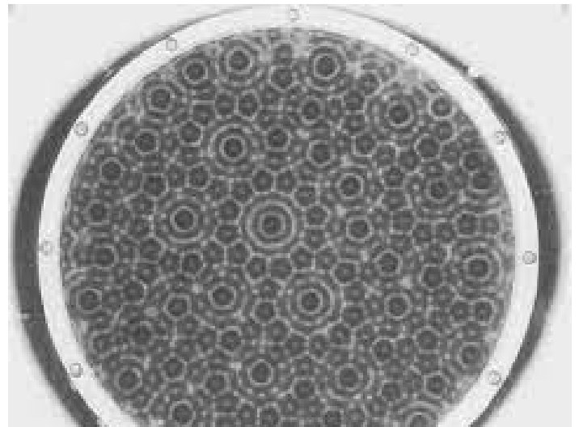
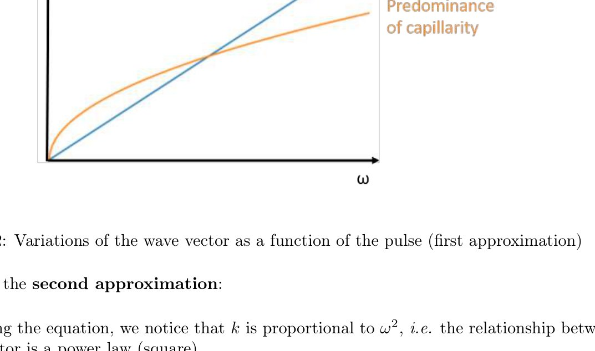
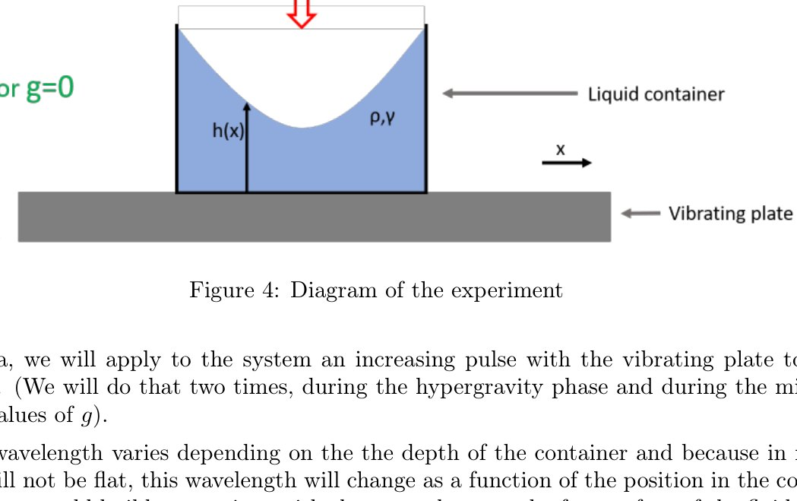

Team proposal · École Normale Supérieure · CNES parabolic flight call 2022 (shortlisted)
Gravity and Confined Faraday Waves
Experiment designMicrogravityTeam project

Summary
When a liquid is shaken vertically, standing waves appear at its surface: the Faraday instability. On Earth, gravity dominates the wave behaviour; in microgravity only capillarity remains. With four classmates we designed an experiment for the CNES parabolic flight campaign to watch the same waves while gravity changes from 1.8 g to 0 g, plus a bonus experiment on waves on a floating spherical drop.
The proposal was shortlisted. I was the team's communication manager and worked on the experimental protocol.
On the bench
Everything had to be planned for a moving aircraft: a vertical shaker of about 25 kg, transparent containers of several shapes, a hydrophobic container for the spherical drop, strobe lighting and a camera above the surface, with the power budget (220 V / 4 A) and the test schedule at the ENS Fablab before integration.
Method & equations
Dispersion relation of surface waves (pulsation \(\omega\), wave number \(k\), depth \(h\), surface tension \(\gamma\)):
$$\omega^{2}=\left(gk+\frac{\gamma k^{3}}{\rho}\right)\tanh(hk)=\left(\ell_c^{-2}+k^{2}\right)\frac{\gamma k}{\rho}\tanh(hk),\qquad \ell_c=\sqrt{\frac{\gamma}{\rho g}}$$For \(k\ell_c\ll1\) gravity dominates (\(\omega^2\approx gk\)); for \(k\ell_c\gg1\) capillarity takes over (\(\omega^2\approx\gamma k^3/\rho\)). Changing \(g\) in flight moves the crossover — the measurable signature we were after.
Figures




